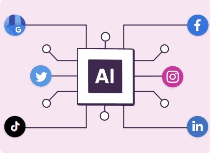
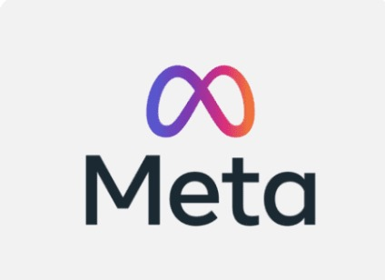

Articles covering the most recent updates and advancements
Recent Posts

Blog Post Title 1
by Roshan
3 May 2024
120 Likes
Delegating Social Media Tasks to AI
In today's digital age, maintaining a vibrant social media presence is crucial for businesses and individuals alike. However, the demands of crafting engaging content, scheduling posts, and analyzing metrics can be overwhelming.
Unlocking Efficiency with AI-Powered Schedulers
Say goodbye to manual scheduling and hello to AI-powered schedulers! These innovative tools like Hootsuite, Magic Studio, Wordtune etc analyze your audience's behavior, optimize posting times, and ensure your content reaches its maximum potential. By delegating this task to AI, you free up valuable time to focus on creating quality content and engaging with your audience in real-time. Plus, with advanced features like post recycling and cross-platform scheduling, you'll never miss an opportunity to connect with your followers.
Blog Post Title 2
by Varshita
23 April 2024
85 Likes
Summer Fashion Tips: Dressing Up for the Sunny Days!
Summer has arrived, bringing with it the perfect opportunity to shed those heavy layers and embrace the light, breezy vibes of the season. Whether you're lounging poolside with a refreshing piña colada or wandering through the vibrant stalls of a farmers' market, it's time to give your wardrobe a fresh update.
Maxi dresses are the epitome of summer chic. These ankle-grazing wonders offer a sense of effortless elegance, almost like a gentle embrace from the sun itself. Embrace floral prints, pastel hues, or even trendy tie-dye patterns. The key is to find a flowy silhouette that allows you to twirl with abandon. Pair your maxi dress with strappy sandals for a versatile look that's perfect for brunch or a romantic sunset stroll along the beach.
Blog Post Title 3
by Varshita
23 April 2024
150 Likes
Why Brands Should Partner with Creators
In the digital marketing landscape, a powerful alliance is brewing between brands and creators, and it’s transforming the way businesses connect with their audience. Imagine a seamless dance between brands and creators, where each step taken translates into increased sales and amplified brand presence.
Authenticity Amplified
Creators represent authenticity. Their content resonates with audiences because it is genuine and relatable. When a creator endorses a brand, it’s perceived as a genuine recommendation rather than a scripted advertisement. This authenticity fosters trust among consumers, leading to higher conversion rates and long-term brand loyalty

Blog Post Title 4
by Varshita
20 April 2024
200 Likes
Introducing Meta AI: Your New Sidekick in the Digital Universe!
In the fast-evolving landscape of artificial intelligence, Meta AI stands out as a beacon of innovation and progress. Let's delve into the capabilities, technology, research collaboration, knowledge sharing, and staying updated with this intelligent assistant.
At the heart of Meta AI lies Meta Llama 3, the pinnacle of their AI model development.
What's the Buzz About Meta AI?
Meta AI isn't your typical chatbot—it's the ultimate AI companion. Picture this: it's the life of the AI party, armed with the latest memes, capable of predicting your next pizza craving, and well-versed in all things tech. In essence, Meta AI is like having a brilliant assistant who's always on standby to provide insightful answers to your burning questions, whether you're enjoying your morning coffee or tackling the day's tasks.
Blog Post Title 5
by Varshita
20 April 2024
170 Likes
Generative AI: Unveiling New Possibilities
Generative AI is a powerful subset of artificial intelligence that focuses on creating new content rather than simply analyzing and responding to existing data. It is the driving force behind groundbreaking applications like text generation, image synthesis, and even music composition. Imagine a world where machines can autonomously create art, write articles, and produce music that rivals human creativity.
Generative AI isn't just about replicating human creativity; it's about expanding the boundaries of what we thought possible. From generating realistic images to composing symphonies, this technology has the potential to revolutionize various industries and open up new avenues for artistic expression and problem-solving.
Blog Post Title 6
by Varshita
20 April 2024
190 Likes
Exploring the World of NFTs
In the rapidly evolving landscape of digital assets, NFTs have emerged as a groundbreaking innovation that is reshaping how we perceive ownership, creativity, and the value of digital content. Non-Fungible Tokens (NFTs) are unique digital assets that leverage blockchain technology to certify their authenticity and ownership. Unlike cryptocurrencies like Bitcoin or Ethereum, which are fungible and can be exchanged on a one-to-one basis, each NFT is distinct and holds its own value.
The NFT phenomenon has captured the attention of artists, collectors, and investors worldwide. Artists are now able to tokenize their digital creations, ensuring they retain ownership and control over their work. This has opened up new avenues for creators to monetize their art and reach global audiences without the need for traditional intermediaries.
Discover Froker
Discover the unique approach and innovation Froker brings to the industry.